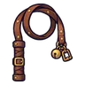

หมาลากเกวียน
มอนธาตุไม่มีธาตุ Lv 34–42
เจอที่
| แมพ | โซน | Lv | ภูมิภาค |
|---|---|---|---|
| ทางเกวียนในหุบ | 34–42 | ดินแดนเหนือ | |
| ทางเกวียนในหุบ | ขบวนเกวียนหัก | 40–42 | ดินแดนเหนือ |
ค่าสถานะตามเลเวล
| Lv | HP | ATK | DEF | MDEF | EXP | Job |
|---|---|---|---|---|---|---|
| 34 | 4,213 | 63–95 | 14 | 6 | 46 | 35 |
| 38 | 5,719 | 76–114 | 15 | 7 | 51 | 38 |
| 42 | 7,560 | 87–130 | 17 | 8 | 55 | 41 |
ตีด้วยธาตุไหนดี
แรงขึ้น: —
เบาลง: วิญญาณ ×0.25
วัตถุดิบที่ดรอป
| ของ | โอกาส | |
|---|---|---|
| หัวเข็มขัดสายลาก | 55% | 1 ชิ้น (15% ได้ 2) |
อุปกรณ์ที่ดรอป (1)
| ของ | โอกาส |
|---|---|
 แส้สายลากเกวียน | 0.12% |
สกิล
หอนเรียกฝูง (Lv 25+) · หอนเรียกฝูง (Lv 60+) · กระโจน (Lv 60+)